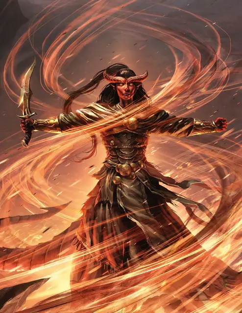

Вейнифер
Vanifer
Средний Гуманоид (Тифлинг), нейтрально-злой, именной НИП

Класс Доспеха 15 (кожаный клёпаный доспех)
Хиты 112 (15к8 + 45)
Скорость 30 футов
| мод | спас | ||
|---|---|---|---|
| СИЛ | 11 | +0 | +0 |
| ЛОВ | 16 | +3 | +3 |
| ТЕЛ | 17 | +3 | +3 |
| мод | спас | ||
|---|---|---|---|
| ИНТ | 12 | +1 | +1 |
| МДР | 13 | +1 | +1 |
| ХАР | 19 | +4 | +4 |
Навыки Выступление +8, Магия +5, Обман +8
Иммунитет к урону огонь
Чувства тёмное зрение 60 футов, пассивное Восприятие 11
Языки Общий, Игнан, Инфернальный
Опасность 9 (5000 опыта)
Бонус мастерства +4
Особенности
Погребальный костер. Когда хиты Вейнифер падают до 0, её тело исчезает во вспышке огня и дыма. Всё, во что она была одета и что носила с собой, остаётся лежать в кучке пепла.
Легендарное сопротивление (2/день). Если Вейнифер проваливает спасбросок, она может вместо этого сделать спасбросок успешным.
Использование заклинаний. Вейнифер является заклинателем 10-го уровня. Её базовой характеристикой является Харизма (Сл спасброска от заклинаний 16, +8 к атакам заклинаниями). Вейнифер знает следующие заклинания чародея:
• Заговоры (неограниченно):леденящее прикосновение [chill touch], огненный снаряд [fire bolt], дружба [friends], волшебная рука [mage hand], сообщение [message], сотворение пламени [produce flame], чудотворство [thaumaturgy]
• 1 уровень (4 ячейки):огненные ладони[burning hands], цветной шарик [chromatic orb], адское возмездие [hellish rebuke], щит [shield]
• 2 уровень (3 ячейки):тьма[darkness], обнаружение мыслей [detect thoughts], туманный шаг [misty step], палящий луч [scorching ray]
• 3 уровень (3 ячейки):контрзаклинание [counterspell], огненный шар [fireball], гипнотический узор [hypnotic pattern]
• 4 уровень (3 ячейки): огненная стена[wall of fire]
• 5 уровень (2 ячейки): подчинение личности [dominate person]
Действия
Мультиатака. Вейнифер совершает две атаки.
Высекающий Искры. Рукопашная или дальнобойная атака оружием: +9 к попаданию, досягаемость 5 фт. или дистанция 20/60 фт., одна цель. Попадание: колющий урон 7 (1к4 + 5) плюс урон огнём 7 (2к6).
Логово
В узле огня. Когда храму Вечного Пламени угрожает опасность, Вейнифер отступает к Рыдающему Колоссу, в узел огня. Здесь Вейнифер получает дополнительное использование своей способности «Легендарное сопротивление».
Действия логова
Если Вейнифер находится в узле огня, без Имикса, она может использовать действия логова, а её показатель опасности увеличивается до 12 (8400 опыта). При значении инициативы «20» (в случае ничьей проигрывает всем конкурентам) она может использовать действие логова, чтобы сотворить одно из своих заклинаний не выше 3-го уровня без использования компонентов и ячеек заклинаний. Она не может использовать одно и то же заклинание два раунда подряд, хотя она может продолжить концентрироваться на заклинании, вызванном действием логова ранее. Вейнифер не может совершать иных действий логова, если она концентрируется на заклинании, вызванном действием логова. Её излюбленная тактика — использовать действие логова для накладывания заклинания огненный шар [fireball]или гипнотический узор [hypnotic pattern].
Если Вейнифер тратит действие логова на заклинание туманный шаг[misty step], она также вбирает в себя силу огненного узла, тем самым восстанавливая себе 15 (3к8 + 2) хитов.
Описание
Тяжёлое детство Вейнифер ожесточило её сердце.
Она считает, что мир вокруг неё порочен, мучителен и заслуживает сгинуть в пламени. На протяжении многих лет она была танцовщицей и наложницей при дворе паши в Калимшане [Calimshan], но, благодаря своему безжалостному честолюбию и умелому манипулированию людьми, сумела бежать из рабства. Эти же качества помогают ей управлять растущим культом и теперь, когда она нашла Высекающий Искры и облачилась в мантию пророка огня.
Вейнифер предпочитает наблюдать за сражением издалека, бросая в противников разрушительные заклинания, а все, кто осмелился противостоять ей в ближнем бою, получают болезненный урок: Вейнифер вместе с Высекающим Искры составляют грозный дуэт.